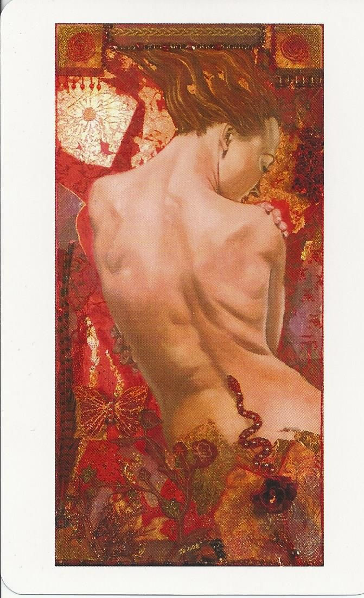
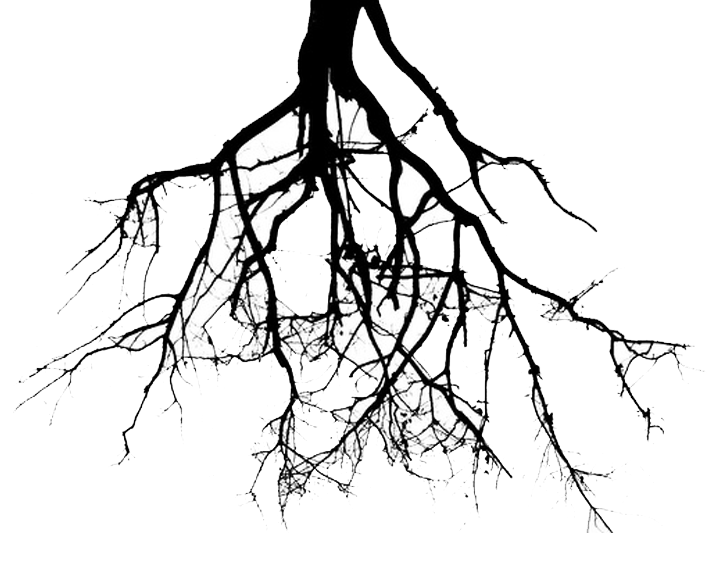

Rock, Blues, Arabic and West African Roots

Rosetta Stoned
Coded by Danny Singer
Throughout this course, the need to critically deconstruct given and accepted historical narratives about music (especially when they privilege a white, rich and male group) seemed to be constantly serving as the guiding thematic thread. While there was also a more straightforward fact-based narrative presented in the powerpoint slides, the critical colour of the course really came out in the readings - i.e. Madonna's game-changing contributions seen in Bell Hooks' transgressive light. With so many new tools for sieving out hidden and complex layers of meaning from music and media (semiotics, critical theory, feminism, marxism etc.), the simpler lessons could easily fall by the wayside. If we are not careful, a narrative like this may influence us to psychologically dismember things that would have been profound in their original forms. This point will be illustrated historically and critically through the example of the band "Tool".
Introduction
Hello! I'm a Toronto area drummer and percussionist with 15 years of experience and a passion for a great groove. I especially love West African and African-derived musics (Cuban, Jazz, Blues etc.). I loathe being seen as "just a drummer" because melody and harmony also make my spirit soar! I don't just drum, I sing with the drums!
Historically, Tool burst onto the LA scene riding on the tidal wave of grunge bands that swept away the remnants of the over-the-top Sunset Strip Hair/Glam Metal Scene. While not really classifiable as "grunge", they shared the elements of "angst" and "artistic delivery" with grunge. (Duran and Wiederhorn 2008 in Tool:The Ultimate Review). Throughout the 90s and up to 2006, Tool released five albums, some of which have since gone multi-platinum. In terms of hard rock/metal narratives discussed in this course, Tool do not engage in any obvious exscription or misogyny. Tool singer Maynard James Keenan has used cross-dressing as a stage antic which reminds one of glam metal's use of androgyny. However, it is not a cornerstone of the band's image (like in glam) as it is just one of Maynard's many costumes that he may don for a show. If there is romance in their music (which is not itself really clear - their image, lyrics and media tend to be very metaphorical and surreal), it is not the straightforward and easily digestible form found in Bon Jovi.
Where I'm From
Toronto is my city and I thrive off of the diversity of cultures, people and music that can be found here. You could just as easily catch me checking out some killer live salsa at Lula Lounge or playing some jazz with friends from world-renowned Humber College at one of this city's many sophisticated jazz bars.
Tool is historically important for a number of reasons. The first and most obvious is that they make music that is progressive, dark, introspective, brooding, and seen by many as unfriendly and abrasive. Despite all of this, they have been successful on a massive global level. How? According to (Wiederhorn 2008 in Tool:The Ultimate Review), it was because they could provide the right mix of their own style and what was popular at the time. The second reason is that to a large extent they were able to use sophisticated and evocative lyrics, rhythms, visuals (album art, stage show) while still maintaining a heavy edge. Tool does tend to attract a substantial male audience that revels in the cathartic release of pent-up aggression that Tool's music gives them a la Walser "male fantasy", but while Tool's agressive instrumentation and timbre definately fits that bill, the lyrics, rhythms AND visual aspects have something that Walser does not touch on, namely emotional depth (especially in their later work). "Tool always had an underlying serious vibe, and they helped me see that music doesn't have to just be about excess, girls and money". (Scott 2008 in Tool:The Ultimate Review).
More About Me
What are my hobbies?
When not playing, practicing, or checking out music, you might find me breaking a sweat at the gym, or expanding my mind with a great book - I love deep books like Russell's History of Western Philosophy.
What is my greatest dream?
My dream is to create a higher awareness of the West African (Mande) musical idiom in this city while recruiting sophisticated and open-minded players to help me fuse it with Rock, Jazz and other genres. I want that to be the spearhead of a larger cultural movement that could spread accross the whole world and help mend cultural differences!
What kind of music have I been listening to lately?
- Eddie Palmieri-Best of Eddie 2 Disc Set
- Lobi Traore - Bamako
- Ali Farka Toure and Ry Cooder - Talking Timbuktu
- Vieux Farka Toure and Idan Raichel - Tel Aviv Session
- John Scofield Trio - EnRoute Live Album
- Milton Banana - Sambas de Bossa
- Kendrick Lamar - To Pimp A Butterfly
| ROSETTA STONED: FORMAL ROAD MAP |
| KEY | D Minor |
| METER | Variable |
| TEMPO | Quarter=113 |
| METRIC BREAKDOWN OF SECTIONS |
| Intro (0:00 - 4:02) | Free Time |
| Rant (4:03) | 8/8 Time with 3-3-2 grouping |
| Holy F** (4:19) | 5/8 Time |
| Repetition/Variation of prev. until 6:08 |
| Odd Clave (6:08) | 9/8 and 8/8 in alternation |
| Main Theme (6:43) | 6/8 and 5/8 in alternation |
| Out-there rhythmic stuff until 11:58 |
| Final Melody Section (11:58) | W. African-esque 6/8 or 12 feel |
| HARMONY |
| This song is no harmonic wonder, the sophistication is in the rhythms. Most of the riffs are just various rhythmic permutations of pentatonic sequences. However there is a classic minor progression that is stated at the beginning and re-introduced at the end: "i, bvii, iv, bvi" |
- Ali
- Vieux
- Idan
- Jimi
- Om Kalsoum
- Tool
Tool's first two albums, Opiate and Undertow were unique in that they were basically a cool variant of 90's anti-establishment alt-rock - but not worthy of a MUS2009 slide. It was their last 3 albums: Aenima, Lateralus and 10,000 days that put Tool on the map as psychedelic game-changers. If you take a look at the table to the left, you will see the flabbergasting rhythmic sophistication that tool employs in their song "Rosetta Stoned". In the final melodic section, we hear an African 6/8 (or 12/8, depending on how it's felt), and in the rest of the song the rate of rhythmic variation is extremely high for a band on the pop charts. This is not a historical anomaly - Tool draws heavily from 70's prog, namely King Crimson, Tool drummer Danny Carey is into Indian classical music. It is no coincidence then that Tool has worked extensively with renowned producer David Bottrill (Brian Eno, Peter Gabriel, King Crimson) who was instrumental in helping them bring out their stylistic uniqueness on their final 3 albums.
- Cadence Points
- Progression Science
Philosphical Roots
With all of their visceral experimental darkness and enigmatic mystery, Tool is a tough band to construct an accurate history for. Complex rhythm, heavy sound and psychedelic texture have been used before and by themselves are not new. As mentioned earlier though, their lyrical content, especially in their later work becomes very metaphorical and verges on the spiritual. Combine the lyrical and spiritual elements with the sophisticated rhythm and dark texture and you get something totally new and poignant. Poignant is an important descriptor here since it refers to emotional immediacy - something that of the readings only Scott De Veaux seemed to glaze over it in reference to another author's (Panassie) opinion on Early New Orleans Jazz.
- Tone Colour-Extensions-Voicings
- Blues Detune/Emotional Waver
- Major Modes
Financial Roots
- Front-End Web Development
- Weddings
- A Following
- Jobbing
- Community

In my conception , the soul is enlarged during life on earth via a way of living. In Plato’s world, this may be done by acquiring knowledge (“Ideas”) which are not from sensory impressions (that are distortions/illusions) but come from (the mind/insight). This can be told in his “parable of the cave” but I render this by simply juxtaposing an ideal triangle (straight lines) to a perceived triangle (curves).
Music will always be a funny subject to analyze in a paper like this due to the fact that none of us, especially musicians are immune to its power. The author is easily misled by his admiration for his chosen topic, and in this fact lies its central flaw. However something critical can be summed up from this exercise:. There is a kind of earthen honesty in backing up that which moves us though we know not for certain why, for if critical theory truly satisfied human hunger for deep explanation, then we probably wouldn't need music at all. Tool clearly exemplefies this in their RADIO hit "Lateralus" (Which has a time signature based on the Fibonacci Sequence) where Maynard croons in an interlude: "I embrace my desire to swing on the spiral of our divinity and still be a human". Pay special attention to the fact that the lyric is not "...and still be a human that is a social construction of a heteronormative patriarchal dominator system".
- Dynamics (Comes in Famadu)
- Contour Direction Climax (Comes in WA Idiom)
- Sequences and scalic passages (Unbalanced)
- Minor modes (blue is contextual)
Works Cited
- October 2008, Tool, The Ultimate Review (Motion Picture) U.S.A.: Music Video Distributors
- Tool (2006) Rosetta Stoned on 10,000 days [CD] U.S.A.: Tool Dissectional, Volcano Entertainment.
- Idiomatic Jazz Shit
- - 14736251
- - flat3flat6
- - parker blues
- - 4 minor flat 7
- - flat 6 flat 3 non chrom
- - generalized 2 5
- - minor 2 5
- Jazz Theory and Harmony
- 8th, 16th note
- Melodic/Harmonic Analysis/